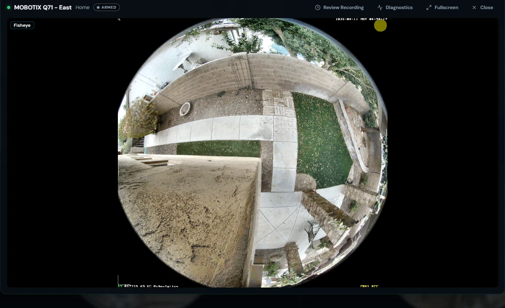
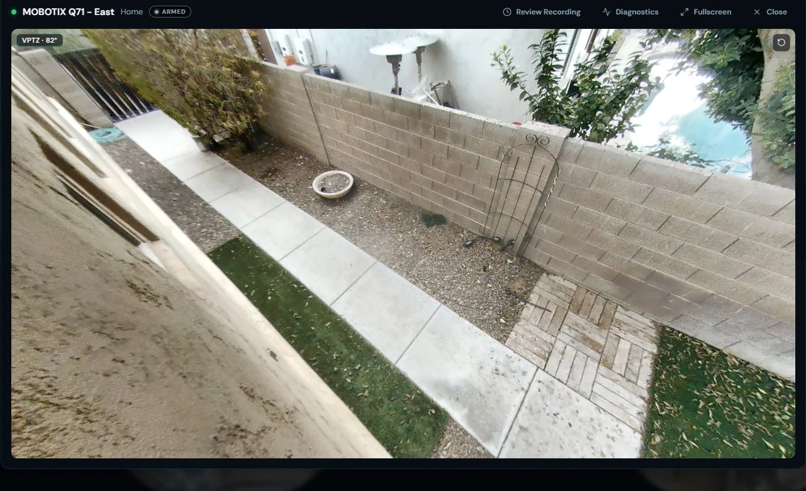
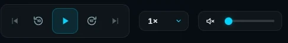
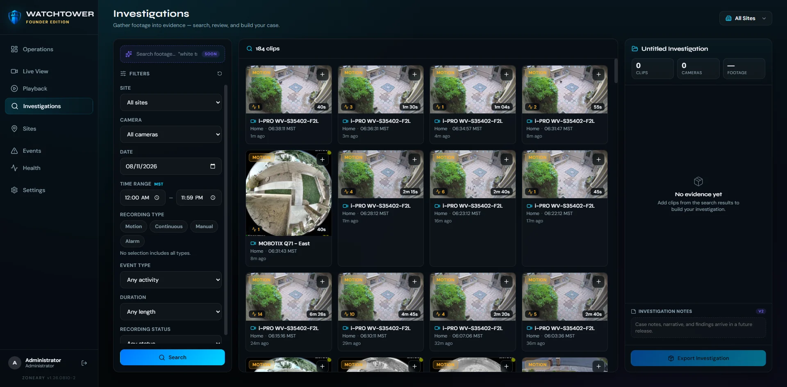
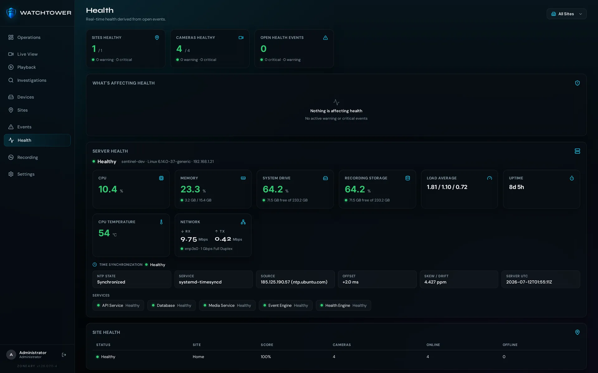
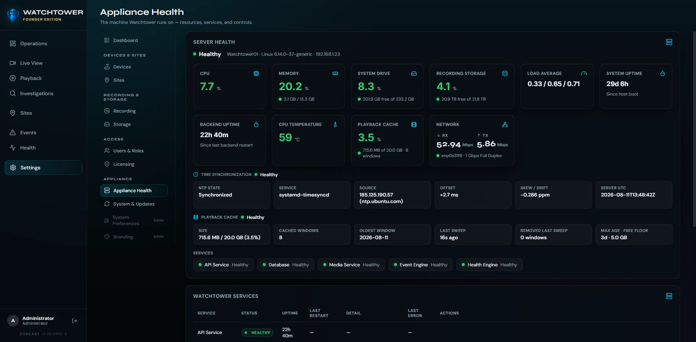
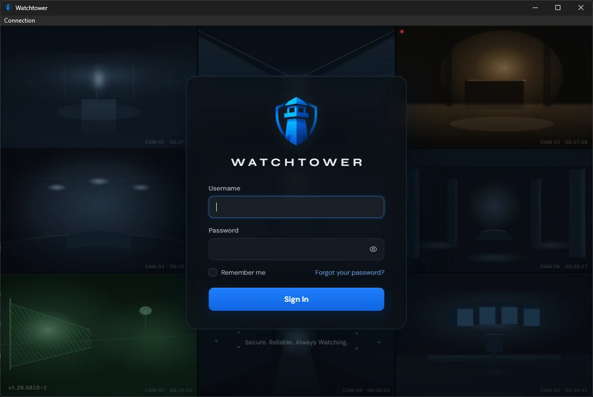
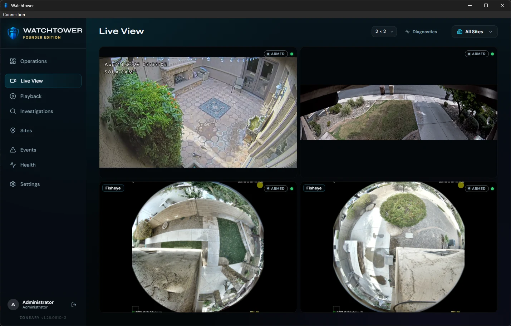
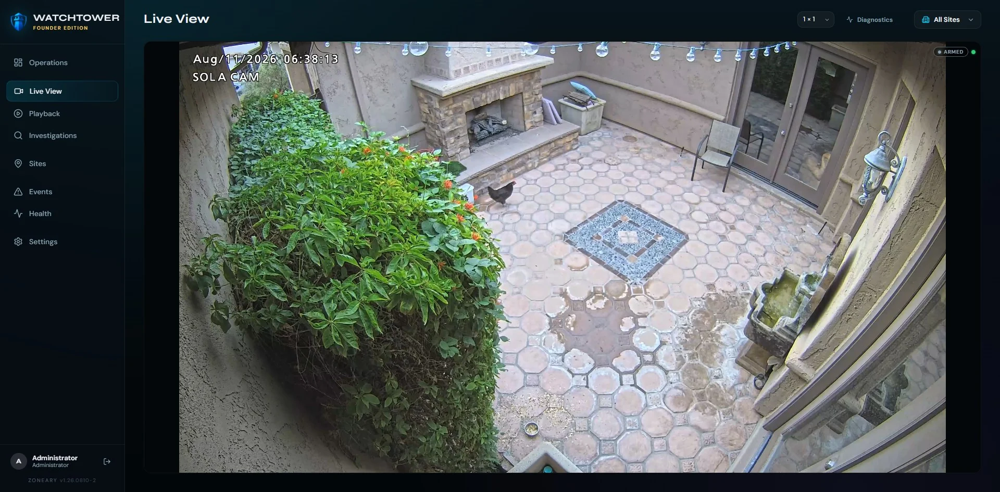

Watchtower is Zoneary's flagship video management system — live monitoring, video and audio recording, playback and investigations, designed for responsive multi-camera monitoring, honest about system state, and built to grow with the installation. It runs on your own hardware, and Watchtower does not charge per camera.

On one side: enterprise platforms priced per camera, licensed per feature, and complex enough to need a specialist on staff. On the other: free recorders and phone apps that fall over the moment a deployment gets real.
Watchtower is the missing middle. Professional capability without institutional arrogance — built for the small installation and the large one, on the same software, with the same honesty.
A real VMS should be judged on one night: the night you need the footage. Watchtower is built for that night — and honest with you every night before it.
Multi-camera walls designed for responsive monitoring of local video. Latency is a security flaw, and Watchtower is designed to treat it like one as the wall grows.
Watchtower includes a native WebGL dewarping experience for compatible fisheye workflows, running directly in the browser without a proprietary desktop viewing plugin.
Camera walls are arranged to match how a site is actually watched, rather than a fixed grid the software insists on.
PlannedPublished browser, GPU and camera-model support matrix


The same camera, before and after dewarping — both running in the browser.
Watchtower tracks storage composition, retention and system health, and is designed to surface capacity pressure before you run out of room. Pruning prioritizes recordings over regenerable playback cache.

Pick a camera and a moment, and Watchtower takes you there. A dense recording timeline and motion markers are designed to turn long stretches of recorded footage into something you can actually navigate.

Watchtower records supported camera audio alongside the video and carries it through playback in sync with the picture — with mute and volume sitting in the same transport bar as the scrub controls. Where a stream needs it, audio is normalized to AAC.

Mute and volume, in the playback transport.
Audio depends on the camera, the selected stream profile and the codec it exposes — not every camera or profile provides a usable audio stream. Where audio isn't available, Watchtower records the video and carries on. This is inbound camera audio: Watchtower does not provide two-way talk.
Finding the moment is only half the job. Watchtower turns what you found into a clear record — bookmarked, tagged, exported, and ready to hand to someone who wasn't there.
Mark a point on the timeline as soon as you find it, so it's still there tomorrow — and so the next person doesn't have to find it again.
Group related clips under one case instead of scattering them across folders and drives. An investigation is a thing, not a pile of files.
Clip tools and an export vault produce the file you actually need to share — without handing anyone access to the rest of your system.

Search the recordings, gather what matters into a case, and export it as one record.
Bookmark, tag and export — the difference between having footage and having an answer.
Sites, cameras, recording and storage in one calm view. And when Watchtower isn't sure, it says so — "unknown", rather than a comforting green. False reassurance is more dangerous than an honest warning.


Every site, one map — monitor every location at a glance, then drop straight into the cameras behind it.
Most recorded time is empty. Watchtower analyzes camera video locally and records motion activity into the event timeline, so playback starts at activity instead of at midnight.
Video is analyzed on your own hardware as it records, and motion is tagged onto continuous recording — no separate scan afterwards, and nothing sent to a cloud service to decide what mattered.
Configurable sensitivity and exclusion zones reduce nuisance detections, so a swaying branch or a busy street doesn't fill the timeline with noise you'll learn to ignore.
Motion activity is represented in the recording and playback timelines, so you can jump between events instead of scrubbing blind, and skip the hours where nothing moved at all.
PlannedObject classification · advanced analytic rules
A recorder can answer a network check while its drive quietly fails. Watchtower is designed to report what is actually true about the system it runs on — and when it doesn't know something, to say "unknown" rather than show you a colour you'd like to see.


Two different questions, answered separately: is the security system healthy, and is the machine it runs on healthy.
Watchtower is built around protocols the industry already agreed on, so cameras can be chosen on merit — price, optics, the mount that fits. Audio support depends on the camera, stream profile and available codec. Compatibility details will be published before release.
ONVIF-based discovery and setup: Watchtower finds ONVIF devices on the local network and takes their profiles and stream configuration from the standard, rather than from a bespoke integration per brand.
Standards-based RTSP video ingestion — the streaming standard widely implemented across IP cameras, including ones already mounted on your building. Where a stream carries usable audio, Watchtower ingests that too.
No proprietary recorder to buy. Watchtower is built around open standards rather than a per-brand integration list, so cameras can be chosen on merit.
PlannedVendor-specific extensions
Currently tested with 6 ONVIF devices — discovered on our lab network across several manufacturers. This is the hardware on our bench today — not a formal or universal compatibility guarantee. Checking a specific model? Ask us.
Watchtower isn't limited to a browser. The Watchtower desktop client brings the monitoring experience into a dedicated native application while connecting directly to the Watchtower system.
These are client platforms. Watchtower Server itself runs on Linux — see hardware & system requirements.
Native Watchtower desktop client for Windows.
Native Watchtower desktop client for macOS.
Native Linux desktop client is currently in development.


The Watchtower desktop client, connected to a Watchtower system.
The desktop client is another way to operate Watchtower, not a requirement. Watchtower stays fully usable in the browser — including its browser-native fisheye dewarping — with no proprietary viewing plugin.
Watchtower runs on your own hardware. Core local operation — live view, recording and playback — does not require cloud video storage or a remote service round-trip.
Recordings live on the storage you chose, in the building you chose. Sharing a clip is a decision you make, not a default you opt out of.
Live view, playback and recording are designed to keep working on the local network when the uplink does not.
Watchtower does not charge per camera. One license covers one Watchtower system, bought once — no mandatory subscription.
Watchtower Server runs on Linux. Below is our initial supported baseline for launch, and the two machines we actually run Watchtower on every day — kept clearly apart, because they are not the same thing. Both are commercial Dell platforms that reached us through the professional video-security industry; that is where the hardware came from, not an endorsement of Watchtower by anyone who sold it.
Watchtower Server runs on Linux. Windows, macOS and Linux desktop clients can connect to your Watchtower system.
Our initial supported baseline for launch. Formal capacity characterization is still in progress, so treat these as a starting point rather than a permanently validated floor.
For customers building a new Watchtower server rather than repurposing hardware they already own.
Watchtower isn't developed against a theoretical server specification. Our primary Watchtower appliance runs the same recording, playback, motion and operations workloads used throughout development and field testing.
This is what we run, not what you need. WT01's recording array and installed graphics card are not Watchtower requirements — the NVIDIA T600 is present in this machine, but we have not established that Watchtower depends on it for normal server operation. WT01's two drives are configured as RAID0: a test configuration chosen for capacity and throughput, which provides no disk redundancy.
Watchtower is also built and exercised daily on ordinary desktop hardware. DEV01 is our development and QA machine — a small-form-factor office desktop, running the same Watchtower server build against the same lab cameras, without an appliance-class recording array behind it.
A real development machine, not a minimum specification. DEV01 is shown because it is modest, not because it defines a floor — we have not characterized its capacity, and it carries no dedicated recording volume. The GeForce GT 1030 is installed but currently runs on the open-source nouveau driver, so this machine does not validate NVIDIA or NVENC accelerated encoding, and Watchtower does not require a discrete graphics card for normal server operation.
Watchtower supports dedicated recording storage. Capacity and redundancy should be selected for the installation's own retention and resilience requirements — not copied from our test bench.
Watchtower capacity depends on the complete workload, including camera count, resolution, codec, bitrate, frame rate, recording mode, motion processing, audio, concurrent live viewing, playback activity and storage performance. Our initial supported target of up to 32 cameras per system is an engineering specification we are still characterizing — our current lab environment of 6 ONVIF cameras/devices is not evidence that either machine above has been validated at that figure. Licensing does not meter camera count.
Watchtower Server runs in a standard Linux software environment, including FFmpeg, a Python backend runtime, PostgreSQL, systemd service management and a validated Linux filesystem such as XFS or ext4. Exact supported package versions and installation steps will be published with the installation documentation.
Watchtower doesn't meter cameras. A license covers one Watchtower system — what you connect to it is your business, not another line item.
A real Watchtower system, free to use. Connect up to four cameras with up to seven days of recording retention and run the core Watchtower VMS platform without a subscription.
Removes the Community camera and retention limits. One license, one Watchtower system, bought once — and no licence to buy again every time you mount a camera.
Buy the system. Add cameras. Don't buy another license every time you mount one.
Founder Edition is the first 500 paid Watchtower licenses, and it stays a Founder license for good — the designation is separate from the launch price. December 31, 2026 ends the launch price for new customers; a license already bought is unaffected. Licensing does not meter your camera count. Supported capacity depends on your Watchtower hardware and workload; our initial supported target is up to 32 cameras per Watchtower system, which is a system-capacity guideline rather than a licensing limit. A license activates one Watchtower system at a time. Paid licenses are covered by a 30-day refund, available upon license deactivation.
Questions about a specific deployment? info@zoneary.com
Real screens from the current Watchtower build — not conceptual artwork.

A look at what's planned. These are directions we're building toward — not features shipping today.
Richer per-camera motion tuning on top of the sensitivity and exclusion zones already in the build.
Distinguishing people and vehicles from everything else, and advanced analytic rules on top — used to help you see, never to decide for you.
Richer case tooling: shared cases, richer export packaging, and a cleaner chain of custody.
Larger fleets and richer cross-site rollups through one console.
Infrastructure health from PulseGrid surfaced directly beside the cameras it affects.
A maintained list of tested cameras and hardware, published beyond the bench we test on today.
What people ask before they trust a VMS with the one night it has to work.
No. Watchtower runs on your own hardware, and live view, recording and playback are designed to work on your local network with the uplink down. Internet access is for the things that genuinely need it, not for watching your own cameras.
On storage you chose, in the building you chose. Core local operation does not require cloud video storage, and does not upload your recordings to Zoneary. Sharing a clip is an action you take, not a default you have to opt out of.
No — Watchtower does not charge per camera. Adding a camera is not a licence purchase. Watchtower Community is free for up to 4 cameras with up to 7-day retention; the Founder Edition removes those limits for a one-time $349 (through December 31, 2026; $399 regular).
Two editions. Community is free — up to 4 cameras, up to 7-day retention, the core Watchtower experience, no subscription. Founder Edition is a one-time $349 launch price through December 31, 2026 ($399 regular), which removes those limits.
No per-camera licensing either way. A license activates one Watchtower system at a time, and replacing or migrating a system is supported. Founder Edition is the first 500 paid licenses; that designation is separate from the launch price.
Watchtower uses ONVIF-based discovery and setup with standards-based RTSP video ingestion, rather than a per-brand integration list. ONVIF devices on the local network are discovered rather than added one address at a time.
Hardware used during development and interoperability testing currently includes i-PRO, MOBOTIX Q71 and MOBOTIX MOVE / MOVE U2VC-series equipment — tested with up to 6 ONVIF cameras/devices in our current lab environment. That is a test bench, not a supported-device list. Compatibility details will be published before release; until then, ask us about a specific model and we'll tell you what we know.
Watchtower manages the video. PulseGrid monitors the infrastructure behind it — servers, storage, network, power and environment. Sentinel modernizes and controls the home security system. Each stands on its own; together they're the Zoneary ecosystem.
Not yet — Watchtower is pre-launch, so nothing is on sale today. Editions and pricing are published above so you can plan: Community free, Founder Edition $349 through December 31, 2026. Request early access and we'll bring you in as it rolls out.
Watchtower leads, but it doesn't stand alone. Each product addresses one layer of the same security operation. They share a philosophy and direction; they are not yet marketed as one integrated suite.
Live monitoring, recording, playback and investigations — the flagship VMS.
You are hereThe health of the hardware, storage, network and environment behind the video.
Understand it → SentinelHome Security Control
SentinelHome Security ControlModern, local control of the alarm system on the wiring and sensors you already own.
Protect it →Watchtower manages the video. PulseGrid monitors the infrastructure. Sentinel modernizes and controls the home security system. Together, they form the Zoneary ecosystem — local-first, owned, not rented.
Watchtower is in active development and tested against real cameras, real storage and real failures. Request early access and we'll bring you in as it rolls out.